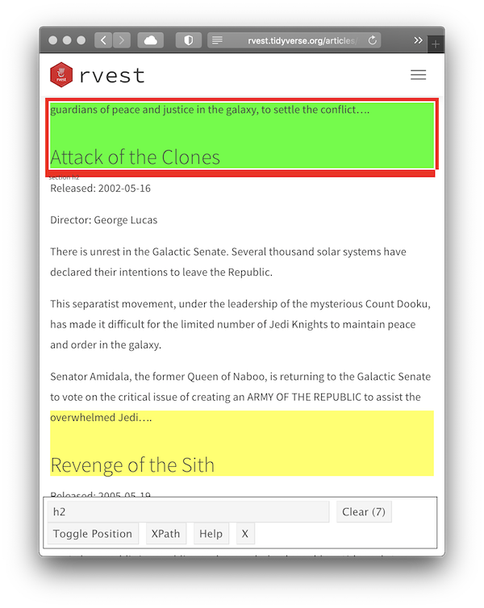

SelectorGadget is a JavaScript bookmarklet that allows you to interactively figure out what css selector you need to extract desired components from a page.
Installation
To install it, open this page in your browser, and then drag the following link to your bookmark bar: SelectorGadget.
Use
To use it, open the page you want to scrape, then:
Click the SelectorGadget entry in your bookmark bar.
Click on the element you want to select. SelectorGadget will make a first guess at what css selector you want. It’s likely to be bad since it only has one example to learn from, but it’s a start. Elements that match the selector will be highlighted in yellow.
Click on elements that shouldn’t be selected. They will turn red. Click on elements that should be selected. They will turn green.
Iterate until only the elements you want are selected. SelectorGadget isn’t perfect and sometimes won’t be able to find a useful css selector. Sometimes starting from a different element helps.
Example
For example, imagine we want to find the names of the movies listed in vignette("starwars").
Start by opening https://rvest.tidyverse.org/articles/starwars.html in a web browser.
-
Click on the SelectorGadget link in the bookmarks. The SelectorGadget console will appear at the bottom of the screen, and element currently under the mouse will be highlighted in orange.

-
Click on the movie name to select it. The element you selected will be highlighted in green. SelectorGadget guesses which css selector you want (
h2in this case), and highlights all matches in yellow (see total count equal to 7 as indicated on on the “Clear” button).
-
Scroll around the document to verify that we have selected all the desired movie titles and nothing else. In this case, it looks like SelectorGadget figured it out on the first try, and we can use the selector in our R code:
html %>% html_element("h2") %>% html_text2() #> [1] "The Phantom Menace"
Now let’s try something a little more challenging: selecting all paragraphs of the movie intro.
-
Start the same way as before, opening the website and then using the SelectorGadget bookmark, but this time we click on the first paragraph of the intro.

-
This obviously selects too many elements, so click on one of the paragraphs that shouldn’t match. It turns red indicating that this element shouldn’t be matched.

-
This looks good, so we convert it to R code:
html %>% html_elements(".crawl p") %>% html_text2() %>% .[1:4] #> [1] "Turmoil has engulfed the Galactic Republic. The taxation of trade routes to outlying star systems is in dispute." #> [2] "Hoping to resolve the matter with a blockade of deadly battleships, the greedy Trade Federation has stopped all shipping to the small planet of Naboo." #> [3] "While the Congress of the Republic endlessly debates this alarming chain of events, the Supreme Chancellor has secretly dispatched two Jedi Knights, the guardians of peace and justice in the galaxy, to settle the conflict…." #> [4] "There is unrest in the Galactic Senate. Several thousand solar systems have declared their intentions to leave the Republic."
This is correct, but we’ve lost the connection between title and intro. To fix this problem we need to take a step back and see if we can find an element that identifies all the data for one movie. By carefully hovering, we can figure out that the section selector seems to do the job:
films <- html %>% html_elements("section")
films
#> {xml_nodeset (7)}
#> [1] <section><h2 data-id="1">\nThe Phantom Menace\n</h2>\n<p>\nReleased: 1999 ...
#> [2] <section><h2 data-id="2">\nAttack of the Clones\n</h2>\n<p>\nReleased: 20 ...
#> [3] <section><h2 data-id="3">\nRevenge of the Sith\n</h2>\n<p>\nReleased: 200 ...
#> [4] <section><h2 data-id="4">\nA New Hope\n</h2>\n<p>\nReleased: 1977-05-25\n ...
#> [5] <section><h2 data-id="5">\nThe Empire Strikes Back\n</h2>\n<p>\nReleased: ...
#> [6] <section><h2 data-id="6">\nReturn of the Jedi\n</h2>\n<p>\nReleased: 1983 ...
#> [7] <section><h2 data-id="7">\nThe Force Awakens\n</h2>\n<p>\nReleased: 2015- ...Then we can get the title for each film:
films %>%
html_element("h2") %>%
html_text2()
#> [1] "The Phantom Menace" "Attack of the Clones"
#> [3] "Revenge of the Sith" "A New Hope"
#> [5] "The Empire Strikes Back" "Return of the Jedi"
#> [7] "The Force Awakens"And the contents of that intro:
films %>%
html_element(".crawl") %>%
html_text2() %>%
.[[1]] %>%
writeLines()
#> Turmoil has engulfed the Galactic Republic. The taxation of trade routes to outlying star systems is in dispute.
#>
#> Hoping to resolve the matter with a blockade of deadly battleships, the greedy Trade Federation has stopped all shipping to the small planet of Naboo.
#>
#> While the Congress of the Republic endlessly debates this alarming chain of events, the Supreme Chancellor has secretly dispatched two Jedi Knights, the guardians of peace and justice in the galaxy, to settle the conflict….This is a pretty common experience — SelectorGadget will get you started finding useful selectors but you’ll often have to combine it with other code.